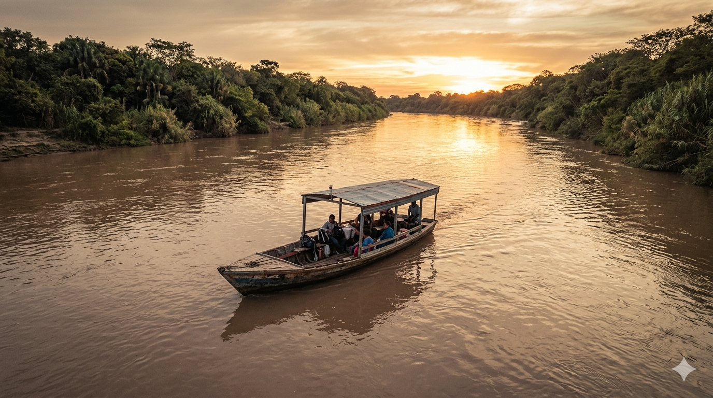

Historia de la frontera Orán–Bermejo

Si te quedás un rato en la plaza San Martín de Orán y escuchás a la gente mayor, vas a notar que hablan de Bermejo no como "el extranjero", sino como "el otro lado". Y hay una razón histórica concreta: para los oranesos, Bermejo fue siempre parte del mismo paisaje, mucho antes de que el Estado fijara una aduana en el río.
Cuando no había frontera
San Ramón de la Nueva Orán se funda en 1794, como avanzada del Virreinato del Río de la Plata sobre los pueblos originarios del Chaco. Bermejo, del lado boliviano, surge mucho después, recién en el siglo XIX, como puesto fronterizo después de la independencia boliviana.
Durante el siglo XIX y buena parte del XX, el río Bermejo era un límite simbólico más que real. La gente cruzaba en chalana, comerciaba madera, ganado, sal. No había aduana funcional hasta los años 30.
La zafra y los zafreros bolivianos
Entre 1930 y 1970, el motor económico de Orán fue el azúcar. El ingenio San Martín del Tabacal (en Hipólito Yrigoyen, a 30 km) empleó por décadas a miles de zafreros bolivianos que cruzaban el Bermejo para la cosecha de caña. Esa migración estacional creó el primer puente humano sólido entre las dos ciudades.
Muchos zafreros se quedaron, formaron familias, y hoy buena parte de los apellidos oraneses tienen raíz boliviana. Esa mezcla explica por qué la cultura de las dos ciudades es la misma, más allá del mapa.
El "boom" de las cuevitas
En los años 90, con la convertibilidad uno a uno (1 peso = 1 dólar), comprar en Bolivia era casi gratis para un argentino. El fenómeno se hizo masivo. Aparecieron las "cuevitas": pequeños comercios al costado del puente Aguas Blancas que vendían whisky, electrónica japonesa, perfumes franceses. Buses enteros venían desde Salta capital los fines de semana.
"En el 95 vendíamos televisores de 14 pulgadas Sony por 200 pesos. La cola para cruzar empezaba a las 6 de la mañana y llegaba hasta la rotonda." — Vecino de Aguas Blancas, conversación informal, 2024.
La crisis de 2001 y la pausa
La devaluación de 2002 invirtió el flujo. Por algunos años, los bolivianos venían a comprar a Orán (especialmente vestimenta y calzado de marca argentina). El paso siguió activo pero más balanceado.
El nuevo ciclo: 2018 en adelante
La inflación argentina sostenida y la brecha cambiaria (dólar oficial vs blue) reactivaron el viaje a Bermejo. Hoy el cruce ya no es solo para "cuevitas": es compra de mercado, almacén, ropa para chicos, electrónica intermedia. Cada vez menos contrabando y más viaje familiar de fin de semana.
La pandemia (2020–2021) cerró completamente el paso por casi dos años, algo que solo había pasado durante guerras del siglo XIX. Cuando se reabrió en marzo de 2022, hubo varios días de filas históricas.
Lo que cambió, lo que no
Lo que cambió: ahora se paga con QR en algunos comercios bolivianos, hay WiFi público en la plaza de Bermejo, y el control sanitario y aduanero es más estricto.
Lo que no cambió: el río sigue subiendo en enero, la chalana sigue siendo de madera y motor diésel, y la gente sigue saludándose por el nombre a uno y otro lado del puente.
Por qué importa conocer esta historia
Cuando uno entiende que la frontera Orán–Bermejo no es solo un trámite aduanero sino un siglo de circulación de gente y mercadería, viajar para allá deja de sentirse como ir al extranjero. Es más bien recorrer un mismo territorio partido por un río. Y eso, para los que vivimos acá, sigue siendo lo más interesante del lugar.